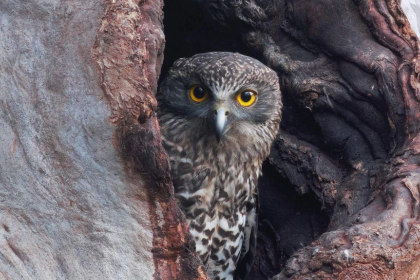
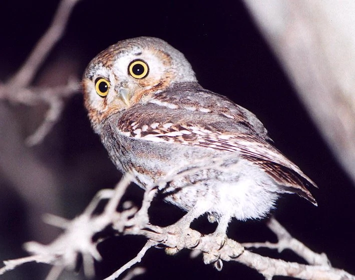

Owls Who?
Owls are birds from the order Strigiformes (/ˈstrɪdʒəfɔːrmiːz/), which includes over 200 species of mostly solitary and nocturnal birds of prey typified by an upright stance, a large, broad head, binocular vision, binaural hearing, sharp talons, and feathers adapted for silent flight. Exceptions include the diurnal northern hawk-owl and the gregarious burrowing owl. Owls hunt mostly small mammals, insects, and other birds, although a few species specialize in hunting fish. They are found in all regions of the Earth except the polar ice caps and some remote islands. Owls are divided into two families: the true (or typical) owl family, Strigidae, and the barn-owl family, Tytonidae. A group of owls is called a "parliament".
Owls possess large, forward-facing eyes and ear-holes, a hawk-like beak, a flat face, and usually a conspicuous circle of feathers, a facial disc, around each eye. The feathers making up this disc can be adjusted to sharply focus sounds from varying distances onto the owls' asymmetrically placed ear cavities. Most birds of prey have eyes on the sides of their heads, but the stereoscopic nature of the owl's forward-facing eyes permits the greater sense of depth perception necessary for low-light hunting. Although owls have binocular vision, their large eyes are fixed in their sockets—as are those of most other birds—so they must turn their entire heads to change views. As owls are farsighted, they are unable to clearly see anything within a few centimeters of their eyes. Caught prey can be felt by owls with the use of filoplumes—hairlike feathers on the beak and feet that act as "feelers". Their far vision, particularly in low light, is exceptionally good.

Elf Owl
The elf owl (Micrathene whitneyi) is a small grayish-brown bird about the size of a sparrow found in the Southwestern United States, central Mexico, and the Baja California peninsula. It has pale yellow eyes highlighted by thin white "eyebrows" and a gray bill with a horn-colored tip. The elf owl frequently inhabits woodpecker holes in saguaro cacti; it also nests in natural tree cavities. It is nocturnal and feeds primarily on insects. It is the smallest owl in stature.
The elf owl is the world's lightest owl, although the long-whiskered owlet and the Tamaulipas pygmy owl are of a similarly diminutive length.The mean body weight of this species is 40 g (1.4 oz). These tiny owls are 12.5 to 14.5 cm (4.9 to 5.7 in) long and have a wingspan of about 27 cm (10.5 in). Their primary projection (flight feather) extends nearly past their tail. They have fairly long legs and often appear bow-legged.
BONES
An Owl's skeleton is typical for birds. Designed for both walking and flying, it is very light and strong. In owls, the skeleton makes up about 7-9% of its total body weight. Many of the bones which would be separated in mammals are fused together in birds, making them strong to support their weight on the ground. In addition, some of the larger bones are hollow, with bony internal bracing. This helps reduce overall weight. Several Owl species have obviously asymmetrical skulls, which is an adaptation for directional hearing.